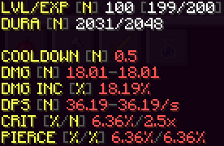
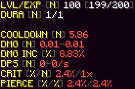

Welcome to my website.
This site is still in beta. (Beta v0.3.0-GRsOb6py)
This site is still in beta. (Beta v0.3.0-GRsOb6py)
This skript is a RPG-like aspect, that allows you to level up your weapons and get stronger. The idea of it came from ItemEditor by NuCodes. The weapon names are randomly generated by a random name generator. The total amount of names is 1000, but with the color codes, its 15000. The chances of getting the same name and color is 1/15000. The chances are getting the same sword name, color and maxed weapon from a mob is 1/12315952281600000000000000 (8.1195508e-26). The chances of getting a maxed out (or the weakest) weapon is 1/821063485440000000000 (1.2179326e-21).
This picture here is also the stats of the best weapon you can get, dealing around 36 damage a second because of that 0.5 second cooldown. The weapon next to it is the worst weapon you can get, dealing a massive 0 damage a second. That cooldown is massive, and the durability is also bad.

Player Clients is a skript where it shows the version your players are on. It'll show the version number, players online using the version, the percentage of the version usage out of the users in the server, and the usernames of the people using the versions. It requires ProtocolSupport, Skript, and skript-mirror. If you have the script/skript, feel free to edit the colors. 1.8.x and below are red cause I don't support them.